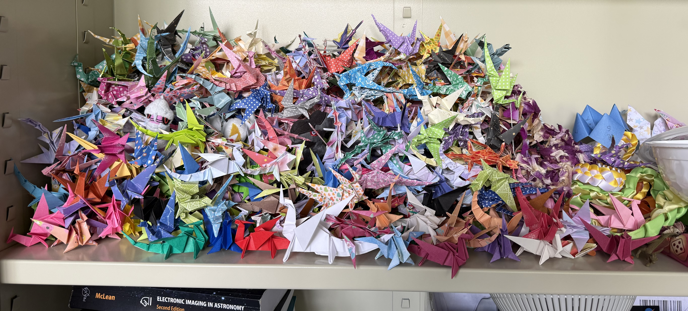

potpourri
ancient history
As an undergraduate, I mainly worked on optomechanical designs for submm/far-IR instruments with Gordon Stacey. I also had a brief at NASA GSFC, where I worked on image recognition for the Mars Sample Return mission with Terra Hardwick.
I feel very fortunate to have worked with kind people at the earliest stages of my academic career. Thanks for everything, everyone! 💕
personal values
🌈 👍 ♾️ 👍 🌻 👍
🪱🐉 👍 💭🍎 👍
my friends

check this out((( I REALLY LIKE learning new things!! If you have a ! cool algorithm, technique, object, phenomenon, etc. ! that you think I might be interested in, please tell me ! even if you aren’t sure how I might use it!!! )))